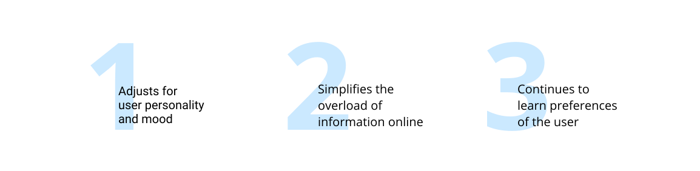
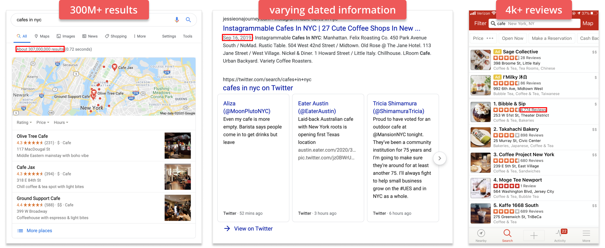
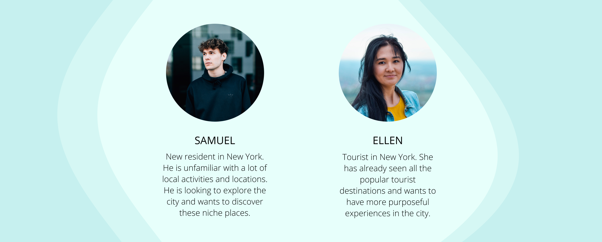
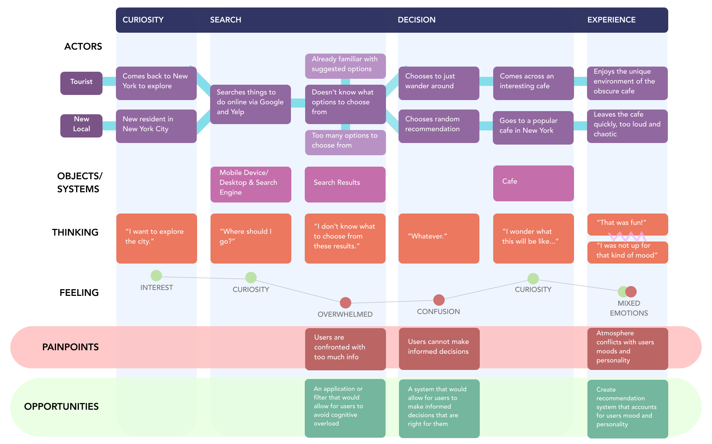
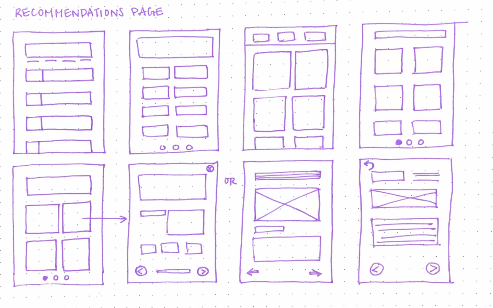
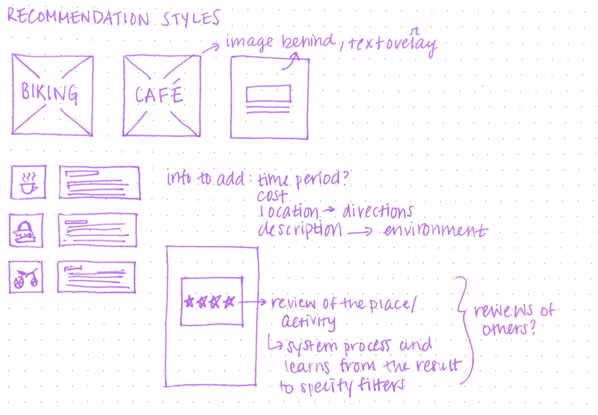
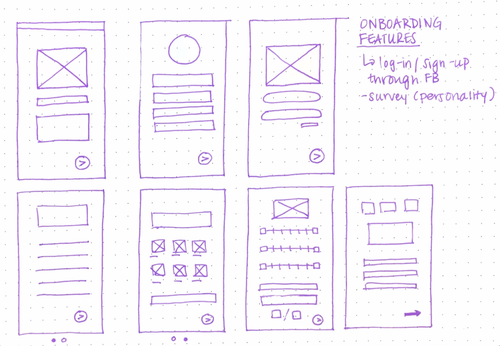
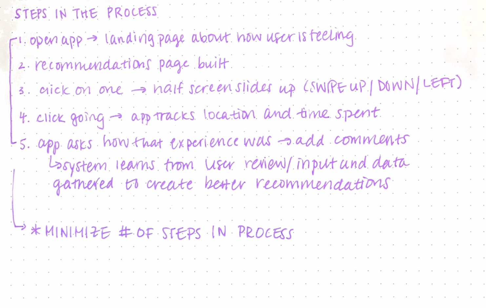
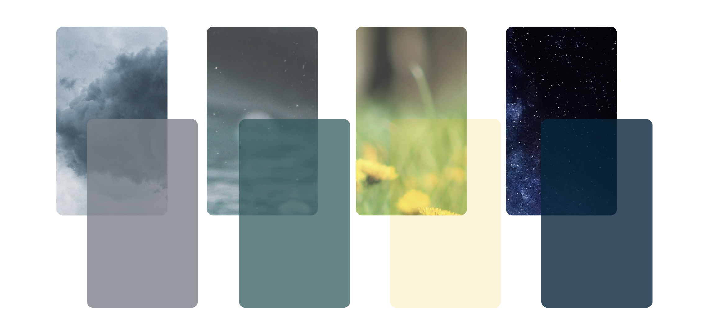

Introducing DOU
Moved to an unfamiliar new city?
Find yourself bored on a Saturday afternoon?
Looking for something new and different to do?
Can't make sense of all your search results?


DOU is a personalized app that gives users suggestions based on what is available in their area.
Often, it's hard to process the abundance of information provided and discern whether or not the activity
or place users want to go to will fit their current mood from Yelp or Google.
DOU filters locations
and activities based on other user reviews from online posts found through general searches, and it
also factors in the weather, time, location, and the personality traits of the user. Onboarding will help to
determine certain characteristics of the user to help build the right foundation for this customized system.
ONBOARDING

personality
A key feature of the onboarding process is the personality survey that allows for the system to begin to shape around the
user's preferences. Optional input of user's Myers-Briggs can indicate the types of environments that users are normally comfortable with,
which provides a more customized experience compared to other applications or resources found online.
LANDING PAGE
brief survey
A survey is taken by the user upon every use to determine how they are feeling that day in order to find the right activities
and experiences for the users, supplemented by other external factors such as time and weather.
system
The application system keeps track of all user inputs in order to better understand user tendencies. This allows for the application
to find more accurate recommendations and become a one-of-a-kind app for each user.

MAIN EXPERIENCE
suggestions
The main experience page displays the results that users search for based off of their inputs and intentions for using the application.
Each suggestion offers detailed information about the location or activity that provides enough context to help users make their decision.
In addition, there are different options provided for users to find other links and save certain suggestions.
PROBLEM
From busy, packed cities like New York to more rural ones, it's always difficult to find unique places to go or things to do especially in unfamiliar environments.
From personal experiences and other testimonies, it's hard to tell if someone would enjoy an experience if they are in a certain mood or they are more comfortable
in certain social environments.
Systems like Yelp and general Google searches don't always give enough information to users on whether or not their personalities would match certain environments.
Sometimes users can't even make those judgements for themselves even if they did have enough information.
In addition, it is difficult for users to keep track of all the different options recommended to them when they have to keep track of timing and weather conditions as well.

PERSONAS

CUSTOMER JOURNEY MAPPING
Through the use of the customer journey map, I was able to identify the painpoints and opportunities in journies of two different personas; in
addition, I was able to identify the points in which user journies can overlap which was an interesting concept to explore during this process as well.

SKETCHING & WIREFRAMES
In this phase of the process, I began to brainstorm and sketch the visual characteristics of the application with the
consolidation of my research findings and the customer journey mapping. I explored different layouts that would allow
for the more effective user experience within this problem space.





COLOR PALETTE
I originally wanted to have the background mimic the weather conditions and time of day in the user’s location.
However, as I experimented with different color schemes I concluded that having an icon of the weather conditions and time were all that was necessary to cue the users.

I mainly stuck with a day-time and night-time mode for the background colors.
Initial screens during onboarding are brighter more vibrant colors to give users a welcoming and warm feeling as they interact with the application.
The screens for questions about user characteristics and personality traits are blue to make users feel calm while they answer questions.
PROTOTYPES
I experimented with different kinds of formats and ways to organize the information that I wanted to display.
I took into account the different colors and typographic signals that I used within these frames in order to create a visually pleasing but efficient designs.
CRITIQUE
A critique that I received on my work is that the use of colors was not as effective as I had intended it to be. The colors
of the recommendation photos could potentially overwhelm the user and could degrade the quality of the whole experience
as well as the interface. As a result, I iterated through different prototypes in order to best accomodate for this issue.
TAKEAWAYS
I learned a lot throughout this personal project. I enjoyed the process of figuring out my own
design styles and honing my skills in how I can represent my ideas and intentions for users within my own designs.
I would like to continue to iterate through higher fidelity prototyping as I receive more feedback from other people.
I would also like to work on creating better user flow and adding in motion to make the app more cohesive.